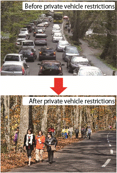

The Purpose and Background Behind the Private Vehicle Restrictions
As a consequence, during peak sightseeing periods roads are overwhelmed with vehicles causing a range of problems including traffic congestion and pollution.
For that reason, the Council for Proper Usage of the Oirase Stream is working on trials of private vehicle restrictions with the aim of conserving the natural environment and reducing traffic congestion. However, a multitude of issues remain; it is difficult for large sized vehicles to pass each other on the detour route, and, as the road running along the Oirase Stream, national route 102, continues to serve its original purpose as an industrial and local community road, expansions in the period and types of vehicles restricted have lead to calls for the upgrade of the "Aobunayama" route used to safely detour the Oirase Stream.
We seek to continue the yearly trials into the future and establish the Oirase Stream Eco Tourism Project as a regular event. We ask for your support and understanding.
|  |